类图和对象图
类图
类图是用类和它们之间的关系描述系统的一种图示，是从静态角度表示系统的，因此类图属于一种静态模型。类图是构建其它图的基础，没有类图，就没有状态图、协作图等其它图，也就无法表示系统的其它各个方面。
定义类
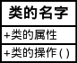
- 名字
- 类的名字用黑体字书写在长方形的最上面，给类命名时最好能够反映类所代表的问题域中的概念。
- 属性
- 类的属性放在类名字的下方，用来描述该类的对象所具有的特征。
- 操作
- 属性仅仅表示了需要处理的数据，对数据的具体处理方法的描述则放在操作部分。
关系
类图由类和它们之间的关系组成，类与类之间通常有关联，通用化(继承)、依赖和精化等四种关系。
关联关系
- 普通关联
普通关联是最常见的一种关联，只要类与类之间存在连接关系就可以用普通关联表示。
- 对象图
- 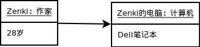
类图表示类和类与类之间的关系，对象图则表示在某一时刻这些类的具体实例和这些实例之间的具体连接关系。
- 递归关联
- 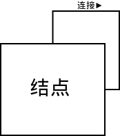
如果一个类与它本身有关联关系，那么这种关联称为递归关联(recursive association)。递归关联指的是同类的对象之间语义上的连接。
- 限定关联
- 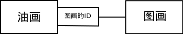
限定关联用于一对多或多对多的关联关系中。在限定关联中，使用限定词将关联中多的那一端的具体对象分成对象集。 限定词可以理解为一种关键词，用关键词把所有的对象分开。
- 或关联
- 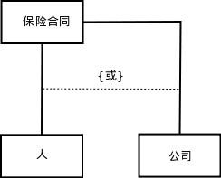
所谓或关联就是对二个或更多个关联附加的约束条件，使类中的对象一次只能应用于一个关联关系中。
- 有序关联
- 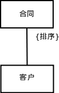
对象与对象之间的连接可以具有一定的次序，就像应把窗口安排在屏幕之上一样。一般情况下，对象之间的关联都是无序的，
如果要明确表示关联中的次序关系，一定要将规格说明{排序}放在表示关联的直线旁，且紧挨着对象被排序的类。
- 三元关联
- 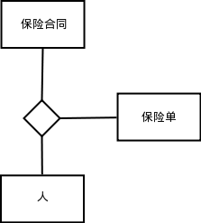
类与类之间的关联关系，不仅限于两个类之间，多个类之间也可以有关联关系。 如果三个类之间有关联关系，则称之为三元关联。
- 聚合
- 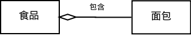
聚合是关联的特例，如果类与类之间的关系具有“整体与部分”的特点，则把这样的关联称为聚合。
继承
- 普通继承
- 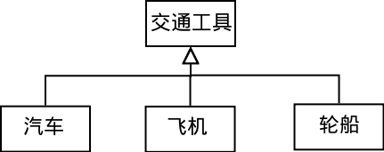
一个类(通用元素)的所有信息(属性或操作)能被另一个类(具体元素)继承，继承某个类的类中不仅可以有属于自己的信息，而且还拥有了被继承类中的信息， 这种机制就是通用化。
- 受限继承
- 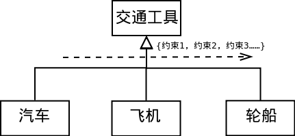
给通用化关系附加一个约束条件，进一步说明该通用化关系的使用方法或扩充方法，这样的通用化关系称为受限通用化。 预定义的约束有四种：多重、不相交、完全和不完全，这些约束都是语义上的约束。
接口
- 接口

接口通常被描述为抽象操作，也就是只用标识(返回值、操作名称、参数表)，说明它的行为、而真正实现部分放在使用该接口的元素中。
包
- 包
- 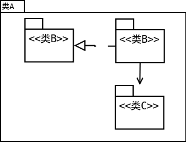
包(package) 是一种组合机制，把各种各样的模型元素通过内在的语义连在一起成为一个整体就叫做包。